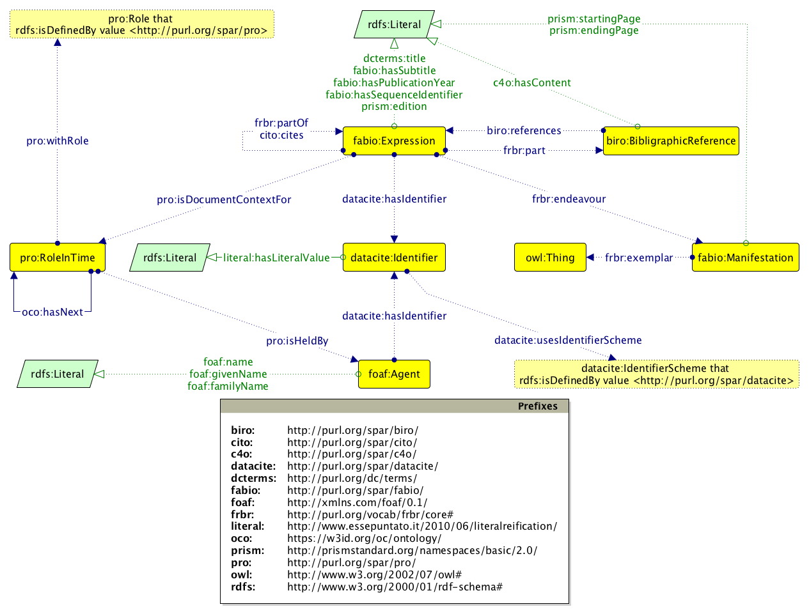

The new instantiation of the OpenCitations Corpus
The OpenCitations project (http://opencitations.net) is currently creating an open citation database with an integrated SPARQL endpoint and a browsing interface to support data consumers. Its main output is the Open Citations Corpus (OCC), an open repository of scholarly citation data made available under a Creative Commons public domain dedication (CC0), which provides accurate bibliographic references harvested from the scholarly literature, described using the SPAR Ontologies according to the OCC metadata document , that others may freely build upon, enhance and reuse for any purpose, without restriction under copyright or database law.
The model
The metadata model used for the data stored in the OCC, available at and briefly summarised in , is explicitly aligned with the SPAR Ontologies and other standard vocabularies. In particular:
-
the FRBR-aligned Bibliographic Ontology (FaBiO) is used for providing a description of all the metadata of citing/cited resources (conference papers, book chapters, journal articles, etc.), their related container resources (academic proceedings, books, journals, etc.), as well as metadata about the particular formats in which they have been embodied (digital vs. print, first and ending pages, etc.);
-
the Publishing Roles Ontology (PRO) is used for describing the roles of agents (author, editor, publisher, etc.) related to bibliographic resource – while the order among roles, e.g. the list of authors of a paper, is handled by extending PRO with an additional property, i.e.
oco:hasNext; -
the Bibliographic Reference Ontology (BiRO) and the Citation Counting and Context Characterization Ontology (C4O) are used for describing the textual content of each reference in the reference list of a citing bibliographic resource;
-
finally, the DataCite Ontology is used for defining all the identifiers (e.g. DOI, PubMed ID, PubMed Central ID, ORCID, ISSN, etc.) for bibliographic resources and all the agents involved – the Friend Of A Friend (FOAF) ontology is used for defining additional data (e.g. names) about agents.
All the terms from the aforementioned ontologies are collected within a new ontology called OpenCitations Ontology (OCO). This is not yet another bibliographic ontology, rather just a place where existing complementary ontological entities from several other ontologies are grouped together for the purpose of providing descriptive metadata for the OCC.

The data
The OCC stores metadata relevant to these citations in RDF, encoded as JSON-LD. In the near future, all the data will be also available as downloadable datasets – in the meantime, two exemplar dataset, compliant with the OCC metadata model introduced in , have been made available starting from article metadata provided by Springer Nature (available at ) and gathered via Europe PubMed Central (available at ).
The OCC (as well as the aforementioned exemplar datasets) includes information about six different kinds of bibliographic entity:
-
bibliographic resources (br), class
fabio:Expression– resources that either cites or are cited by other bibliographic resources (e.g. journal articles), or that contain such citing/cited resources (e.g. journals); -
resource embodiments (re), class
fabio:Manifestation– details of the physical or digital forms in which the bibliographic resources are made available by their publishers; -
bibliographic entries (be), class
biro:BibliographicReference– the literal textual bibliographic entries occurring in the reference lists within bibliographic resources, that reference other bibliographic resources; -
responsible agents (ra), class
foaf:Agent– names of agents having certain roles with respect to bibliographic resources (i.e. names of authors, editors, publishers, etc.); -
agent roles (ar), class
pro:RoleInTime– roles held by agents with respect to bibliographic resources (e.g. author, editor, publisher); -
identifiers (id) (class
datacite:Identifier) – external identifiers (e.g. DOI, ORCID, PubMedID) associated with the bibliographic entities.
The corpus URL (https://w3id.org/oc/corpus/) identifies the entire OCC, which is composed of several sub-datasets, one for each of the aforementioned bibliographic entities included in the corpus. Each of these has a URL composed by suffixing the corpus URL with the two-letter short name for the class of entity (e.g. be
for a bibliographic entry) followed by an oblique slash (e.g. https://w3id.org/oc/corpus/be/). Each dataset is described appropriately by means of the Data Catalog Vocabulary and the VoID Vocabulary, and a SPARQL endpoint is made available for all the entities included in the entire OCC.
Upon initial curation into the OCC, a URL is assigned to each entity within each sub-dataset, which can be accessed in different formats (HTML, RDF/XML, Turtle, and JSON-LD) via URL dereferencing. Each entity URL is composed by suffixing the sub-dataset URL with a number assigned to each resource, unique among resources of the same type, which increments for each new entry in that resource class. For instance, the resource https://w3id.org/oc/corpus/be/537 is the 537th bibliographic entry recorded within the OCC. The final part of such URL, i.e. the two-letter short name for the class of items plus /
plus the number (be/537
in the example), is called corpus identifier, since it allows the unique identification of any entity within the OCC.
Each of these entities has associated metadata describing its provenance by means of PROV-O and its PROV-DC extension (e.g. https://w3id.org/oc/corpus/be/537/prov/se/1). In particular, we keep track of the curatorial activities related to each OCC entity, the curatorial agents involved, and their roles.
All these RDF data are stored in BibJSON encoded as JSON-LD, defined through an appropriate JSON-LD context which hides the complexity of the model in behind natural language keywords. For instance, the following excerpt is the JSON-LD linearisation of the aforementioned be/537
entity:
{
"iri": "gbe:537",
"a": "entry",
"label": "bibliographic entry 537 [be/537]",
"content": "Chang, KY, Unanue, ER. Prediction of HLA-DQ8beta cell peptidome using a computational program and its relationship to autoreactive T cells, Int Immunol, 2009, 21, 6, 705, 13, DOI: 10.1093/intimm/dxp039, PMID: 19461125",
"crossref": "gbr:1682"
}
In this excerpt, iri
defines the URL of the resource in consideration (where gbe:
is a prefix for https://w3id.org/oc/corpus/be/
), while a
, entry
, label
, content
and crossref
stand for rdf:type, biro:BibliographicReference, rdfs:label, c4o:hasContent and biro:references respectively (where gbr:
is a prefix for https://w3id.org/oc/corpus/br/
).
Additional information about OCC's handling of citation the data, and the way they are represented in RDF, are detailed in the official OCC Metadata Document .
The ingestion workflow
The ingestion of citation data into the OCC is handled by two Python scripts called Bibliographic Entries Extractor (BEE) and the SPAR Citation Indexer (SPACIN), available in the OCC's GitHub repository.
BEE
As shown , BEE is responsible for the creation of JSON files containing information about the articles in the OA subset of PubMed Central (retrieved by using the Europe PubMed Central API). Each of these JSON files is created by asking Europe PubMed Central about all the metadata of the articles it stores that have available the source XML file. Once identified, BEE processes all the XML sources so as to extract the complete reference list of the paper in consideration, and includes all the data in the final JSON file. An excerpt of one of those JSON files is introduced as follows:
{
"doi": "10.1007/s11892-016-0752-4",
"pmid": "27168063",
"pmcid": "PMC4863913",
"localid": "MED-27168063",
"curator": "BEE EuropeanPubMedCentralProcessor",
"source": "http://www.ebi.ac.uk/europepmc/webservices/rest/PMC4863913/fullTextXML",
"source_provider": "Europe PubMed Central",
"references": [
...
{
"bibentry": "Chang, KY, Unanue, ER. Prediction of HLA-DQ8beta cell peptidome using a computational program and its relationship to autoreactive T cells, Int Immunol, 2009, 21, 6, 705, 13, DOI: 10.1093/intimm/dxp039, PMID: 19461125",
"pmid": "19461125",
"doi": "10.1093/intimm/dxp039",
"pmcid": "PMC2686615",
"process_entry": "True"
},
...
]
}
In particular, for each articles retrieved by means of the Europe PubMed Central API, BEE stores all the possible identifiers (in the example, doi
, pmid
, pmcid
, and localid
) and all the textual references, enriched by their own related identifiers if they are available. In addition, the JSON file also includes provenance information about the source, its provider and the curator (i.e. the particular BEE Python class responsible for the extraction of these metadata from the source).
We have done a few tests so as to understand the performances of BEE in generating these JSON files. In particular, we queried Europe PubMed Central for the metadata of articles while running BEE for 30 minutes on a MacBook Pro, with 2 GHz Intel Core i7 processor, 8 GB DDR3 1600 MHz, OS X 10.11.3. In that time, we were able to create 185 JSON files containing all the aforementioned metadata, giving a rate of about 6 new JSON files per minute – which will be processed, independently, by the tool presented in the next section.
SPACIN
Starting from the output provided by BEE, SPACIN processes each JSON file, retrieving metadata information about all the citing/cited articles described in it by querying the Crossref API and the ORCID API. These API are also used to disambiguate bibliographic resources and agents by means of the identifiers retrieved (e.g., DOI, ISSN, ISBN, ORCID, URL, and Crossref member URL). Once SPACIN has retrieved all these metadata, appropriate RDF resource are created (or reused, if they have been already added in the past) and stored in the file system in JSON-LD format (as shown in ) and additionally within the OCC triplestore. It is worth noting that, for space and performance reasons, the triplestore includes all the data about the curated entities , but does not store their provenance data nor the descriptions of the datasets themselves, that are accessible only via HTTP.
The SPACIN workflow introduced in is a process that runs until no more JSON files are available from BEE. Thus, the current instance of the OCC is evolving dynamically in time, and can be easily extended beyond Europe Pubmed Central by reconfiguring it to interact with additional REST APIs from different sources, so as to gather new article metadata and their related references.
Each new resource recorded within the OCC by SPACIN occupies between 0.3 and 4 kb, plus an additional 32 kb dedicated to storage of its provenance data. Each day the workflow adds about 2 million triples to the corpus, describing more than 20,000 new citing/cited bibliographic resources and about 100,000 new authors, 5% of whom are disambiguated through their ORCID ids.

We have done a few tests so as to understand the performances of SPACIN in processing the JSON files generated by BEE and produce new resources for the OCC. In particular, we run SPACIN on on two subsets of JSON file: 67 JSON files describing all the papers included in the Proceedings of ISWC 2015, and the first 67 JSON files produced by BEE as the outcome of the experiment described in . We use the same configuration as before, i.e. a MacBook Pro, with 2 GHz Intel Core i7 processor, 8 GB DDR3 1600 MHz, OS X 10.11.3.
ISWC 2015 dataset. SPACIN took 45 minutes to process all the papers in the ISWC 2015 Proceedings, and the outcomes have been published in . Each citing paper contained about 23 references on average, and SPACIN produced 1,441 new citing/cited resources, for a total of 1,531 citation links. These resources are contained in 411 different container resources (e.g. journals, proceedings, books), published by 42 distinct publishers. The total number of authors is 3,076, 157 of whom (5.1%) have been disambiguated through their ORCID. The total number of RDF statements created is 69,995 (which, as explained, excludes provenance data and datasets information).
Europe PubMed Central dataset. SPACIN took 2.5 hours to process the 67 papers from Europe PubMed Central, and the outcomes have been published in . Each citing paper contained about 50 references on average, and SPACIN produced 3,391 new citing/cited resources, for a total amount of 3,337 citation links. These resources are contained in 1,047 different container resources (e.g. journals, proceedings, books), published by 137 distinct publishers. The total number of authors is 21,658, 957 of whom (4.4%) have been disambiguated through their ORCID. The total number of RDF statements created is 377,237 (excluding, as before, provenance data and datasets information).
In we summarise some metrics related to the resources included in the aforementioned exemplar datasets. While these data are far from having a full coverage, they provide interesting snapshots of these two communities. On the one hand, the community of ISWC 2015 is a rather small Computer Science group of Semantic Web experts. Even if the average number of references per paper is quite small (average 23, the paper with the most references having 47 citation links), there are several papers that were cited more than one time (the most cited one received 7 citations). Many of the citations are to resources for which Crossref was not able to return any metadata. This is understandable, since many citations in these Semantic Web papers are to Web documents (e.g. W3C Recommendations) and to workshop papers not indexed by Crossref (e.g. CEUR Workshop Series). Some of these non-Crossref-indexed publications are well known and well cited within this community (the most cited one has 4 citations within these 67 ISWC papers).
| Property | ISWC 2015 | Europe PubMed Central |
|---|---|---|
|
Max. number of citations within a paper |
47 |
320 |
|
Max. number of citations received by a paper within this sample |
7 |
3 |
|
Percentage of cited resources for which Crossref did not return any metadata |
44% |
13% |
|
Max. number of citations received by a cited resource for which Crossref did not return any metadata |
4 |
1 |
On the other hand, we see a quite different citation behaviour in the Europe PubMed Central papers. In this case, as expected, the number of average references is higher (average 50, with one paper having 320 citation links). The paper within this small sample that has been cited most received only 3 citations from the other 66 papers, and this is clearly due to the dimension of the Biomedical and Life Science community to which PubMed Central relates, which is clearly bigger and more sparse than the ISWC one. Again, these papers usually cites others published in journals, to which proper identifiers (e.g. DOI) have been properly assigned, explaining the lower percentage of citations to resources that are not indexed by Crossref .